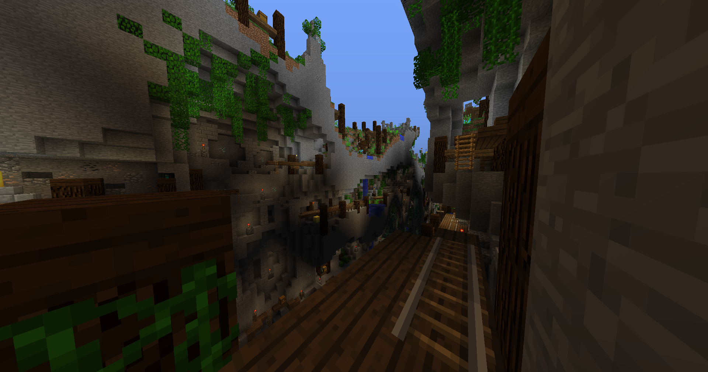
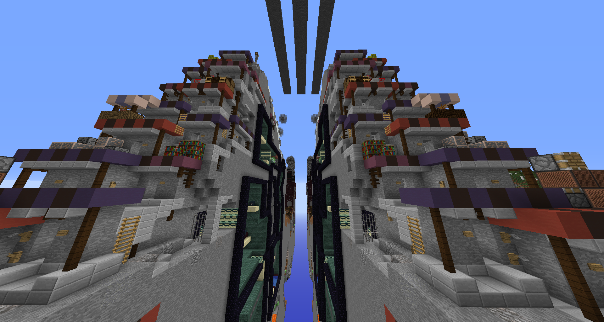

Lesmor is an asymmetrical team-based Minecraft PVP map with a round-based economy. The objective is to win 10 rounds by eliminating the opposing team or capturing the point in the center. With money earned during the round, players can purchase persistent structures or temporary powerups. I made this in 2020 with _Oc's design help during the COVID pandemic as a fun, repeatable game that could be played with our friends, even when we didn't have many players.
Landfall is a Minecraft PVP map under the Race for Wool genre. This map is innovative in its slow incremental resource acquisition which changes the tempo of the game and has other emergent effects, such as uniquely allowing players to choose how much time they invest into gathering resources. I designed this map with build work by CatProductions from 2021-2022.
I have also made many more Race for Wool maps. Some notable ones include Edge, which was made to support smaller team sizes, and Evergreen, which was made as a parody to the generic mapping style.
I concepted and worked on balancing this game in-house. The game is meant to be simple and easy to learn, with potential for high depth fluid movement and routing. One problem is that high-ping players have problems with the dash reset mechanic as they have to wait for the server packets. It didn't come to fruition until after I left, when it was changed to function as a lobby minigame.